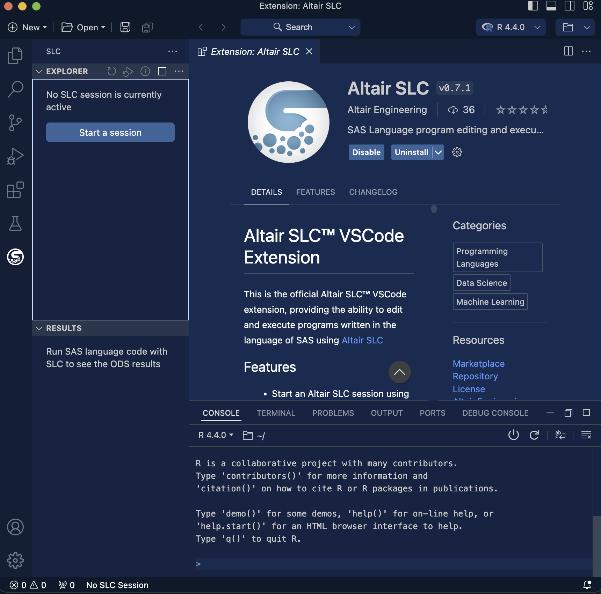

In an earlier post, I argued that SAS is a major tool utilized by the data science community, especially in industries such as Pharma or Finance. R and Python are not rare in these industries, but SAS is still required. Users have to deal with multiple IDEs, stuck on SAS for some things, move to Rstudio for others. The only company that offers a full integration is SAS Viya, but that’s just more SAS. Wouldn’t it be nice if there was an alternative to SAS Viya that allowed data scientists access to the tools they need within a single IDE?
I found a little Easter egg in my initial review of Positron, something that hasn’t gotten any attention but may have huge consequences across industries. Positron supports the integration of the wide-variety of VS Code extensions, one of which is the SAS Language Compiler available from Altair.
SAS in Data Analysis
SAS is the industry standard for data management and analysis with wider use than any open source tools. The SAS ecosystem is deeply embedded in many industries and my consulting group works closely with companies who are migrating from SAS to R and Python. One of the challenges I face is from SAS users who argue that SAS is indeed the best tool for certain data management tasks.
As much as I love R and Python, I have come to agree that SAS is the superior platform for managing tabular data. SAS provides its customers with Viya, the only platform that integrates SAS, R, and Python into a single IDE that allows users to choose the best tool for their project. Unfortunately, SAS Viya still locks users into an proprietary ecosystems with an arguably clunky interface.
Altair SLC
The SAS Language Compiler (SLC) from Altair is a alternative that allows users to develop and run SAS code without buying into the SAS ecosystem. I’ve been using it for several months now and it is a remarkable system. It can read and write .sas7bdat files, execute the entirety of the DATA step, and all the major procedures. Altair acknowledges that their compiler is only about 90% complete and I have noticed a few procedure options missing here and there. But my overall impression is that this is a viable alternative to SAS for most of my clients.
Enter Positron
In the multilingual environment of data science professionals often find themselves juggling between R and Python on a daily basis. Recognizing this need for a more integrated workflow, Posit has introduced a variety of tools that seamlessly incorporate both languages into single environments. Their latest offering is the open-beta release of the Positron Integrated Development Environment (IDE). Positron, built on the foundation of the widely-used VS Code, provides first-class support for both R and Python, promising a more seamless integration between the two.
Positron and SLC
I recently integrated the new Positron with the Altair SLC and it was surprisingly easy. Since Positron is based on VSCode, it has access to all the extensions offered for VSCode. I checked and saw the Altair offers the SLC. In a perfect world, everything would just work… and it does!
Integrating Positron with the Altair SLC
Configuring this integration is surprisingly easy. You will first need to download the the SLC from Altair. Altair offers several licensing options, but there is a free community edition for evaluation and that is what I have been using. Once activated, you can search for SLC in the Positron Extension tab and click “install”. Once installed, you will need to “Start” the SLC session in Positron. Once the session is started, you can create a new SLC Notebook file and start writing SAS code.

Example workflow
Before I wrote this post, I wanted to evaluate how this would work in a real-world workflow. I spent most of my career as an epidemiologist, so I decided to download a public dataset from the National Health Interview Survey (NHIS) to demonstrate how one would use SAS and R within a single project. I can use these data to evaluate a simple epidemiological question: Is current and former smoking associated with cancer? I’ve included this workflow into a public GitHub repository for review.
The National Health Interview Survey is a nationally representative sample of households and assesses demographics, health behaviors, and prevalent diseases. It has been collected annually since 1957 and is a valuable resource for epidemiologists.
Getting the data into Positron
The data are provided in ASCII and CSV formats. Each file includes a SAS Program for importing these data into SAS that includes formats and labels for all variables.
Running this 01. Import Data.sas file in the SLC Notebook will import these data into the SLC environment with few changes to the code. By default, the SLC will save data as a .wpd file, which is not compatible with R. You can change this option in the LIBNAME statement by explicitly requesting a .sas7bdat file. Once these changes were made, the code provided by NHIS ran without error in Positron.
The NHIS has many hundreds of variables and I don’t need them all. Moreover, the data that are provided are not appropriate for the analysis I want to do, so I needed to do a bit of cleanup and derivation prior to my analysis. 02. Data Subset.sas subset the NHIS data to a more limited number of variables and I got to work.
The nice thing about SAS is that it is a near-perfect tool for managing tabular data. I am primarily an R user, but the added complexity of variable classes, NA values, dplyr, base R, it requires a lot more expertise than creating a ggplot or running a GLM. I particularly like the ease of use with the DATA step IF-THEN-ELSE syntax for recoding variables, and I really like having it in Positron.
My most favorite feature of the SAS data step works fantastically in Positron-SLC. SAS Arrays are a programming shortcut for performing some data step on a group of similar variables. I can do the same thing in R using lapply() or purrr, but the simplicity of SAS arrays has always really appealed to me. So I was excited to run the following code to clean up all the prevalent cancer variables:
When I was a SAS programmer, I would create my output tables using PROC REPORT. Over the years I had developed some styling syntax that would make it look ok, but PROC REPORT is a clunky tool and I never liked it.
R provides data scientists with a variety of tools for producing publication-ready tables that can be output in a variety of formats. For Table 1, I used the flextable package to create a table that summarizes the NHIS data. Categorical variables should be converted to factors and each variable should have a label attribute.
Many of us got our start in R through the graphics capabilities. There are several packages that produce beautiful graphics, but ggplot2 is the most popular because it is easy to use and dovetails nicely into the tidyverse ecosystem. For Figure 1, I’ve used ggplot2 to create boxplots of the age distribution by cancer prevalence. Cancer is a disease that affects older people more than younger, and the boxplot clearly demonstrates this.
To actually evaluate whether smoking is associated with cancers, I wrote a function that fit the data to a logistic regression model. The glm package is bundled with Base R to fit a variety of generalized linear models and I evaluated the association between smoking and all cancers, breast cancer, and lung cancer. My function pulls out the appropriate statistics, but I rely on the gt package to format the output into a table.
The gt package is a handy alternative to flextable and I like how it formats my output. The gt package has methods for automatically tabling output from a variety of models, but I chose to subset my output in the function prior to tabling it.
allcancer <-myModels(df, "allCancer", "All Cancer Combined", "smokestatus")breast <-myModels(df, "breast", "Breast cancer (women only)", "smokestatus")lung <-myModels(df, "lung", "Lung cancer", "smokestatus")rbind(allcancer, breast, lung) |>mutate(Outcome = tidyr::replace_na(Outcome, "")) |>gt() |>tab_header(title ="Association between smoking status and cancer",subtitle ="NHIS Data 2023") |>tab_footnote("Models adjust for age and race") |>opt_align_table_header(align ="left") |>opt_vertical_padding(scale =0.5)
Association between smoking status and cancer
NHIS Data 2023
Outcome
Level
Estimate
All Cancer Combined
Never smoker
1.00
Former smoker
1.17 (1.07, 1.29)
Current smoker
1.19 (1.03, 1.36)
Breast cancer (women only)
Never smoker
1.00
Former smoker
0.78 (0.66, 0.92)
Current smoker
0.72 (0.54, 0.96)
Lung cancer
Never smoker
1.00
Former smoker
4.99 (3.23, 7.71)
Current smoker
5.97 (3.45, 10.34)
Models adjust for age and race
Conclusion
I was only a SAS programmer for a few years. I moved to R because it provided me with access to the latest statistical models, big data manipulation, and graphics. But I always missed the simplicty and effectiveness of the SAS DATA step. I have grown quite comfortable doing these tasks inR because moving processes across multiple IDEs was a pain.
Now that I can integrate the Altair SLC with Posit’s new IDE, I can do everything I need to do within a single environment and choose the most appropriate tool for the job. I can’t wait to see what the future holds for Positron and the Altair SLC and I am excited to see if the SLC can be integrated into some of Posit’s server-based products as well.